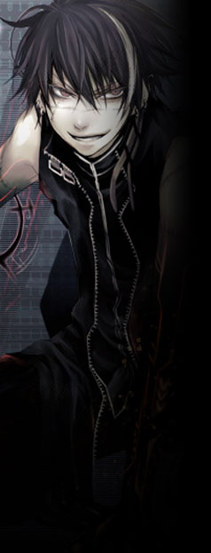
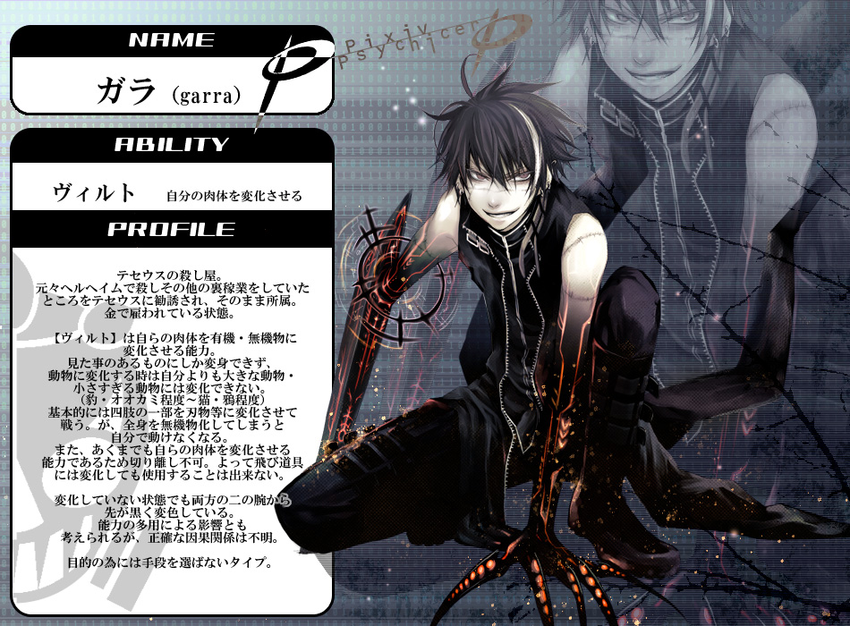

▼特殊部隊【 フェンリル 】
テセウスが有するもう一つの私兵部隊。
ラグナロク事件以前は表立って看板を掲げており、その苛烈極まる活動や隊員の粗暴さから恐れられていた。
性質上、表社会に露見しかねないような大規模任務は少なく、単独任務も多い。 公式サイト原文
ユグドラシルにおけるいわゆる「裏の仕事」を担う組織。
性質上大きく動くことは少なく、単独での任務も多い。
知る者にとってはグレイプニル以上に畏怖される存在。 |
|
 |
ガラ
|
||||||||||||||||||
|
特殊部隊フェンリルの隊長。黒髪に顔を走る真一文字の傷と、ミュータント化によって黒く染まった四肢が特徴。
普段の振る舞いは陽気で軽薄な若者といった風だが、仕事においては冷徹。
異能【ヴィルト】は自らの肉体を有機物・無機物に関わらず変容させる。
①自らが目にしたものにしか変身できない。 制約上、異能の用途は専ら戦闘に限られる。
「あぁ？俺は自由にさせてもらうぜ」
「ハハハ、どんなに強ぇ奴も首を飛ばされちゃお終いだな」 |
|||||||||||||||||||
死亡疑惑について「……これだから嫌なんだ、組織ってのは。こんなに深く入り込むつもり、なかったってのによ」
実はピクサイにおいては死亡している可能性が極めて高いキャラクター。
ガラは元々ストリートチルドレンであり、任務遂行のために手段を選ばないのは劣悪な環境で糧を得るため。
少なくとも余命の使い道として戦いに身を投じる程度には、 「――そこにてめーらが居ると、俺が通れねえからだ！」 公式サイト原文
ガラ
特殊部隊フェンリルの雇われ隊長。
テセウスに雇われている凄腕の殺し屋であり、
基本的に自らの意志で動き、自分のやりたい事をやる。
ジョンに忠誠を誓っているわけではないが、
「あぁ？俺は自由にさせてもらうぜ。」 性能：基礎５ｐステータス＋ボス特性１０ｐ ピクサイ時代の資料
 |
|||||||||||||||||||